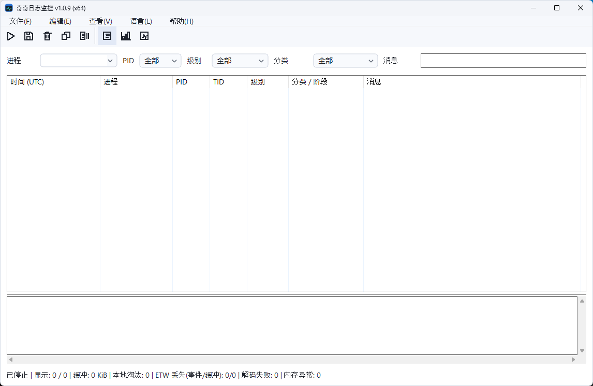
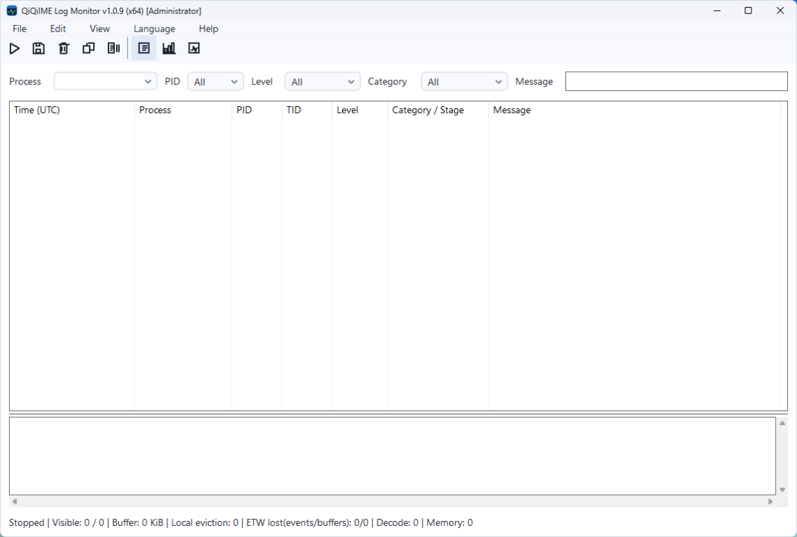
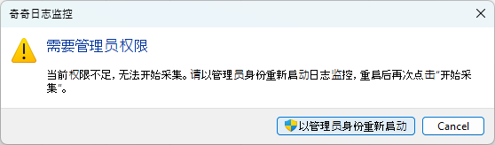

BUILD IN THE OPEN
好的输入，源于细致打磨。
奇奇五笔是一个原生 C++ / TSF 项目。从构建开始，逐步了解词库引擎、组合生命周期、Windows 界面与回归测试。
01 / YOUR TOOLBOX
准备 Windows 开发环境。
使用 Windows x64 开发机构建双架构。仓库预设当前使用 Visual Studio 2026；其他生成器需另行验证。精确要求以开发文档为准。
| 工具 | 准备内容 |
|---|---|
| Visual Studio 2026 | C++ 桌面开发工作负载、x64/x86 MSVC 工具与 CppCoreCheck。 |
| Windows SDK | 10.0.22621.0 或更新版本，同时安装 x64 与 x86 调试工具（cdb）。 |
| CMake / vcpkg | CMake 4.4.4 或更新版本；通过 vcpkg 清单模式获取 Microsoft GSL。 |
| PowerShell | Windows PowerShell 5.1 或 PowerShell 7+；完整脚本检查还需 PSScriptAnalyzer。 |
项目使用 C++26 草案模式，不声称编译器完整支持 C++26。.NET 与 WiX 仅在制作 MSI 时需要。
02 / BUILD & TEST
从一次本地构建开始。
克隆仓库，并进入仓库根目录。
PowerShell
git clone https://github.com/cloudfyy/qiqiime.git
cd qiqiime依次构建并测试 x64 与 x86，默认为 Release。以下命令不会制作安装包。
PowerShell
powershell -ExecutionPolicy Bypass -File scripts\build_all.ps1GUI / TSF 测试共享桌面与单实例状态：请顺序运行双架构测试，测试期间避免键鼠操作。因权限跳过的 ETW 测试不等于通过。
03 / LOCAL DIAGNOSTICS
用日志监控器，看清问题现场。
QiQiIMELogMonitor.exe 是独立的本地 Windows ETW 诊断工具。无需附加调试器，即可按进程、PID、级别、分类或消息筛选已采集事件，查看详情并导出筛选后的快照。
先开始采集，再复现问题
打开日志监控器，选择输入法事件并开始采集，再到出现问题的应用中复现。只能接收采集开启期间产生的事件，不会回放此前的日志。
仅在权限不足时，选择管理员重启
先以普通权限启动。若 Windows 拒绝 ETW 采集，工具会提供可取消的管理员重启选项。如已有记录，请先导出：日志、筛选条件和采集状态不会随重启转移。重启后需再次点击开始采集，不要仅为诊断而提升被测应用的权限。
筛选、查看，再停止并导出
通过筛选条件缩小事件范围，选择记录查看详情。复现后停止采集，导出内容需经检查和脱敏后再分享。


中文界面
开始采集前的空日志视图。筛选条件、事件详情及采集与丢失计数集中在一个窗口中。


英文界面与权限状态
标题标明当前窗口的管理员状态。提权不会自动开始采集，底部状态栏仍显示已停止。


权限提示，不是启动前提
仅在 ETW 报告权限不足时出现此提示。成功重启后会打开新窗口，需要在新窗口中再次开始采集。
采集和导出均在本地进行，不会自动上传给项目。日志可能包含进程名称、路径及敏感上下文；请使用不含隐私的示例文字复现，公开反馈前先检查并脱敏导出文件。
04 / FIND YOUR WAY
读懂项目，从这些入口开始。
欢迎从一个小改进开始。
先搜索已有问题，保持改动聚焦，补充相关回归测试，并说明复现步骤与验证结果。请保留第三方许可声明。